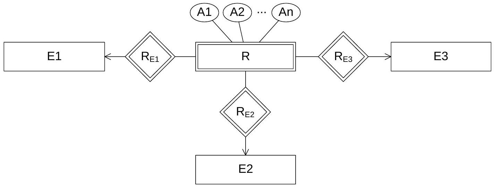
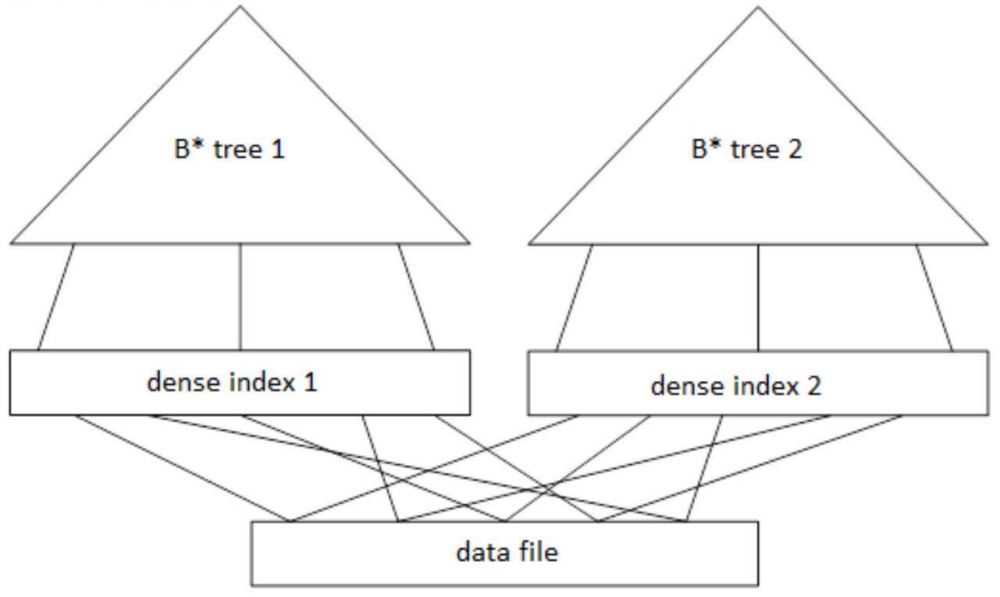

This is not the official BME Databases course website but rather a personal study guide.
This is one of the hardest subjects at BME. Success requires:
| Term | Definition |
|---|---|
| Database | Structured collection of knowledge stored electronically, controlled by DBMS |
| DBMS | Database Management System - software for accessing and controlling data |
| Entity | A thing (physical or logical) that exists and is distinguishable by attributes |
| Entity Set | Collection of all similar entities sharing the same attributes |
| Attribute | Property/characteristic of an entity (has domain of values) |
| Key | Attribute(s) that uniquely identify each entity in a set |
Highest level, closest to user. User doesn't need to know database schema details like data structure or table definitions.
Develops technical map of rules and data structures. Includes ER modeling, relational data models, relations, tables, and queries.
Data blocks, data files, indices for searching. Responsible for allocating space for data.
If hardware damage occurs (e.g., hard drive failure), you don't lose logical structure. The separation allows for data independence and easier maintenance.
ER modeling provides a conceptual design of the database without attention to physical implementation details.
| Symbol | Meaning | Description |
|---|---|---|
| Rectangle | Entity Set | Represents a collection of similar entities |
| Double Rectangle | Weak Entity Set | Entity that borrows key from another entity |
| Diamond | Relationship Set | Represents associations between entities |
| Double Diamond | Identifying Relationship | Relationship that identifies weak entity |
| Circle | Attribute | Property of an entity or relationship |
| Underlined Attribute | Key Attribute | Uniquely identifies entities |
| Triangle (ISA) | Specialization | Hierarchy relationship (A is a B) |
| Cardinality | Notation | Description | Example |
|---|---|---|---|
| One-to-One | \(1:1\) | Each entity of both sets connects to at most one entity of the other | Person ↔ Passport |
| One-to-Many | \(1:N\) | Each entity of second set connects to at most one of first; first can connect to many | Department → Employees |
| Many-to-One | \(M:1\) | Many entities in E1 associate with at most one in E2 | Students → University |
| Many-to-Many | \(M:N\) | Each entity of both sets can connect to arbitrary number of the other | Students ↔ Courses |
A weak entity set is one that:
Room cannot exist without a Building. RoomNumber alone is not unique (many buildings have Room 101), but (BuildingID, RoomNumber) together form a unique key.
If entity set B is a generalization of entity set A, then A is a special kind of B.
Key attribute of PLAYER: ID_NO (borrowed from EMPLOYEE)
Use ISA when you have a subset of entities with additional specialized attributes or when you want to model inheritance relationships.
Relational algebra is a procedural query language consisting of operations that take relations as input and produce relations as output.
| Symbol | Name | Notation | Description |
|---|---|---|---|
| σ | Selection | \(\sigma_{\text{condition}}(R)\) | Selects rows that satisfy a condition |
| π | Projection | \(\pi_{A,B,C}(R)\) | Selects specified columns (eliminates duplicates) |
| × | Cartesian Product | \(R \times S\) | All possible combinations of rows from R and S |
| ⋈ | Natural Join | \(R \bowtie S\) | Combines rows with matching common attributes |
| ⋈θ | Theta Join | \(R \bowtie_{\theta} S\) | Join with condition θ |
| ∪ | Union | \(R \cup S\) | All rows from R or S (no duplicates) |
| ∩ | Intersection | \(R \cap S\) | Rows appearing in both R and S |
| − | Difference | \(R - S\) | Rows in R but not in S |
This means you can break AND conditions into separate selections, and you can apply them in any order.
Only the outermost projection matters - intermediate projections are redundant as long as they include attributes needed for outer projection.
Projection and selection can be swapped if the condition only involves projected attributes.
You can rearrange the order of joins. This is crucial for query optimization!
Where \(X\) are the common attributes between R and S.
Requirements: Union, Intersection, and Difference require relations to have:
Subtract all elements that have something smaller than them.
Apply minimum operation on \(R - \min(R)\)
| Type | Entries per | Data File Order | Use Case |
|---|---|---|---|
| Sparse Index | 1 per data block | Ordered on block level | Primary index, range queries |
| Dense Index | 1 per data record | Unordered | Secondary index, point queries |
| B* Tree | Multiple levels | Ordered on block level | Dynamic, balanced access |
| Hash Index | Variable (buckets) | Hash-based | Fast equality search |
Where: \(b\) = block size, \(p\) = pointer size, \(k\) = key size
Binary search in index + find first block + read data block
Number of pointers per index block
Traverse tree levels + read data block
With each block read, search space shrinks to \(1/f_i\) of previous size. Logarithmic time complexity makes them ideal for large databases.
Case 1: Destination block has space
Case 2: Destination block is full
Search upper level + read dense index block + read data block
If dense index block splits, must update sparse index/B* tree
Maps key \(k\) to one of \(B\) buckets
Hash lookup + linear search within bucket
| Aspect | Primary Index | Secondary Index |
|---|---|---|
| Data File Order | Physically ordered by index key | Not ordered by index key |
| Cost (Key) | \(HT_i + 1\) | \(HT_i + 1\) |
| Cost (Non-Key) | \(HT_i + \lceil SC(A,r)/f_r \rceil\) | \(HT_i + SC(A,r)\) |
| Range Queries | Efficient (sequential blocks) | Less efficient (scattered blocks) |
Secondary index on non-key can be very expensive: each matching record might be in a different block, requiring \(SC(A,r)\) block accesses!
| Symbol | Meaning | Formula (if applicable) |
|---|---|---|
| \(n_r\) | Number of records in relation r | - |
| \(b_r\) | Number of blocks storing r | \(\lceil n_r / f_r \rceil\) |
| \(f_r\) | Blocking factor (records per block) | \(\lfloor \text{block\_size} / \text{record\_size} \rfloor\) |
| \(s_r\) | Size of one record (bytes) | - |
| \(V(A,r)\) | Number of distinct values of A in r | \(|\pi_A(r)|\) |
| \(SC(A,r)\) | Selection cardinality (avg matching records) | \(n_r / V(A,r)\) if not key; 1 if key |
| \(HT_i\) | Height of index tree | \(\lceil \log_{f_i} b_r \rceil\) |
| \(f_i\) | Index branching factor | \(\lfloor (b+k)/(p+k) \rfloor\) |
| \(LB_i\) | Number of leaf blocks in index | - |
| Algorithm | Cost | Requirements |
|---|---|---|
| A1: Linear Search | \(b_r\) | None (always works) |
| A2: Binary Search | \(\lceil \log_2 b_r \rceil + \lceil SC(A,r)/f_r \rceil - 1\) | File ordered by A, blocks contiguous |
| A3: Primary Index (Key) | \(HT_i + 1\) | Primary index on key attribute |
| A4: Primary Index (Non-Key) | \(HT_i + \lceil SC(A,r)/f_r \rceil\) | Primary index on non-key |
| A5: Secondary Index | \(HT_i + SC(A,r)\) or \(HT_i + 1\) if key | Secondary index (B* tree) |
With secondary index on non-key, each matching record could be in a different block, requiring \(SC(A,r)\) block reads!
| Algorithm | Cost |
|---|---|
| A6: Primary Index (v unknown) | \(HT_i + b_r/2\) |
| A6: Primary Index (v known) | \(HT_i + c/f_r\) where \(c\) = # records with \(A \leq v\) |
| A7: Secondary Index (v unknown) | \(HT_i + LB_i/2 + n_r/2 - 1\) |
Result is Cartesian product
Each s record joins with at most one r record
Where \(A\) is the common attribute(s)
| Algorithm | Cost | Notes |
|---|---|---|
| Nested Loop Join | \(n_r \times b_s + b_r\) | Worst case: for each record in r, scan all of s |
| Block Nested Loop | \(b_r \times b_s + b_r\) | For each block in r, scan all blocks of s |
| Indexed Nested Loop | \(b_r + n_r \times c\) | \(c\) = cost of index lookup on s. Put indexed relation in inner loop! |
| Sorted Merge Join | \(b_r + b_s + c\) | \(c\) = sorting cost. Both relations must be sorted on join attribute |
| Hash Join | \(b_r + b_s\) | Build hash table for smaller relation, probe with larger |
| One Relation Fits in RAM | \(b_r + b_s\) | Best case: load smaller relation into memory |
Move selection operations as close to the leaves (base relations) as possible
Process smaller relations first to minimize intermediate result sizes
Keep only attributes needed for:
Each step reduces the size of intermediate results or converts expensive operations (Cartesian product) to more efficient ones (join). Following this order typically produces near-optimal query plans.
Complete exercises from all tutorial PDFs with step-by-step solutions
Design an ER model for a prescription monitoring system:
Entities:
Relationships:
PatientID, SSN, CompanyName, CommercialName, PharmacyName
DOCTOR ISA PERSON, PATIENT ISA PERSON where PERSON has common attributes (FirstName, LastName, BirthDate)
Design an ER model for a university database:
SECTION is a weak entity because:
Question 1: Can version 1 store "which teacher teaches which subject to which class"?
Question 2: Can version 2 store certified but not actively taught specializations?
Problem: Version 1 has separate binary relationships "Teaches" and "Specializes" but no ternary relationship connecting Teacher-Subject-Class together.
We can know:
But we CANNOT know which specific subject a teacher teaches to a specific class.
Version 2 removes the "Specializes" relationship, so now:
Keep BOTH relationships:
Schemas:
Query d): Which manufacturers make laptops but NOT PCs?
Schemas:
Query: Which is the oldest star university?
Explanation: Find all universities for which there exists another university with an earlier founding date, then subtract those from all universities. What remains is the oldest.
Given a relation R(A), find:
a) Smallest element
b) Second smallest element
Relation: 1,000 records, record = 850 bytes, block = 4,000 bytes
Key = 50 bytes, pointer = 18 bytes
Questions:
3. Ordering requirements:
Since index is in RAM, we do binary search in memory (free), then read 1 data block.
Hash table with 7 buckets, \(h(k) = k \bmod 7\)
Records to store: 56, 91, 27, 19, 36, 52, 79
One block per record.
a) Average record access time?
b) Best and worst possible access time?
Bucket 0: 2 records (overflow)
Buckets 1,2,3,5,6: 1 record each
Bucket 4: 0 records
Assuming chaining for overflow:
\[\text{Avg} = \frac{(1+2+1+1+0+1+1)}{7} = \frac{7}{7} = 1 \text{ block}\]But with bucket 0 having overflow:
\[\text{Actual avg} = \frac{(1+2+1+1+1+1+1)}{7} \approx 1.14 \text{ blocks}\]Relation: 10,000,000 records, record = 850 bytes, block = 4,000 bytes
Key = 50 bytes, pointer = 18 bytes
Find:
Tree structure (minimum with perfect balance):
Amazing result: Only 5 disk accesses to search 10 MILLION records!
Relation Acct(City, Balance, ...)
Query: \(\sigma_{\text{City}='Budapest'}(\text{Acct})\)
Given: \(f_{\text{Acct}} = 40\), \(n_{\text{Acct}} = 10,000\), \(V(\text{City}) = 50\)
a) Write query in relational algebra
b) Min, max, avg cost for linear search?
c) Expected cost for binary search (ordered by branch)?
Factor: Position of matching records in file
File ordered by City (assuming Budapest records are consecutive):
\[\text{Find first block} = \left\lceil \log_2 250 \right\rceil = 8 \text{ blocks}\] \[\text{Read matching blocks} = \left\lceil \frac{SC}{f_r} \right\rceil - 1 = \left\lceil \frac{200}{40} \right\rceil - 1 = 5 - 1 = 4\] \[\text{Total} = 8 + 4 = 12 \text{ blocks}\]Relations: Client(\(n=10,000, f=25\)), Deposit(\(n=5,000, f=50\))
Client_Name is key in Client, foreign key in Deposit
\(V(\text{Client\_Name}, \text{Deposit}) = 2,500\)
a) How many clients don't have deposits?
b) Size of natural join?
c) Generalize for different scenarios
\(V(\text{Client\_Name}, \text{Deposit}) = 2,500\) means 2,500 distinct clients have deposits.
\[\text{Clients without deposits} = 10,000 - 2,500 = 7,500\]Since Client_Name is KEY in Client:
\[|\text{Client} \bowtie \text{Deposit}| = |\text{Deposit}| = 5,000\]Each Deposit record joins with exactly ONE Client record.
i) \(R \cap S = \emptyset\): (No common attributes)
\[|R \bowtie S| = n_R \times n_S\]ii) \(R \cap S\) is key in R:
\[|R \bowtie S| \leq n_S\]iii) \(R \cap S \neq \emptyset\), neither key:
\[|R \bowtie S| = \frac{n_R \times n_S}{\max(V(A,R), V(A,S))}\]Relations: R(\(n_R=120,000, s_R=150\)bytes), S(\(n_S=10,000, s_S=250\)bytes)
Block size = 2,000 bytes, hash tables fit in RAM
Find: Cost of hash join. What's the best method?
Read each file once, hash in memory, join in memory.
Much worse!
Best method: Hash join with tables in RAM = 10,481 block accesses
Natural join with B* tree primary index on join attributes
R: \(n_R=140,000, s_R=140\)bytes, key=10bytes, ptr=4bytes
S: \(n_S=15,000, s_S=300\)bytes, key=6bytes, ptr=4bytes
Block size = 4,000 bytes
Which relation in outer loop? Cost of wrong choice?
CORRECT: S in outer loop! Cost = 46,154 blocks
Wrong choice penalty: 425,000 - 46,154 = 378,846 extra blocks (9.2× worse!)
Rule: Put smaller relation in outer loop for indexed nested loop join.
Show that the transitivity axiom is true! The transitivity axiom states: if \(X \rightarrow Y\) and \(Y \rightarrow Z\), then \(X \rightarrow Z\).
According to the definition, \(X \rightarrow Y\) holds if for each two rows \(t, t' \in r(R)\) of the relation, at each point in time it is true that if \(t[X] = t'[X]\), then \(t[Y] = t'[Y]\).
By connecting the two statements, we can see that if (at any point in time) there are two rows that are equal on \(X\), then these will be equal on \(Z\) too. This fulfills the requirement of dependency \(X \rightarrow Z\). ∎
Prove the expandability axiom! The expandability axiom says: If \(X \rightarrow Y\), then \(XZ \rightarrow YZ\).
Let us indirectly assume that \(X \rightarrow Y\) holds, but \(XZ \rightarrow YZ\) is not true.
But this is impossible! Due to the original \(X \rightarrow Y\) dependency, if \(t[X] = t'[X]\), then \(t[Y] = t'[Y]\). This is a contradiction, meaning that the original statement was true. ∎
Is the below set of axioms complete (can all logical consequences be deduced from them)?
Note that rule 2 is identical to the expandability axiom, and rule 3 is identical to the transitivity axiom.
The reflexivity axiom (trivial dependency) cannot be deduced from the rules of the provided axioms. Thus, those \(X \rightarrow Y\) dependencies where \(Y \neq X\), but which are true due to \(Y \subset X\) cannot be deducted if they have not been present in the original set of dependencies.
For relational schema \(R(A, B)\) with empty dependency set, these trivial dependencies cannot be deduced:
What CAN be deduced using Rule 1: \(A \rightarrow A\), \(B \rightarrow B\), \(AB \rightarrow AB\), \(\emptyset \rightarrow \emptyset\)
Rule 2 expands both sides simultaneously, so \(AB \rightarrow A\) cannot be obtained.
Rule 3 cannot be applied as we don't have dependencies where the LHS of one equals the RHS of another.
Provide a relation \(r\) matching schema \(R(A, B, C)\), where \(r\) has 4 rows, and no non-trivial functional dependency is true on it.
One attribute on the left hand side:
To break these dependencies, there must exist a pair of rows which are equal on one attribute but different on other attributes.
| A | B | C |
|---|---|---|
| 0 | 1 | 1 |
| 1 | 0 | 1 |
| 1 | 1 | 0 |
This breaks all dependencies with one attribute on the left (rows equal on A, B, C appear with different values elsewhere).
Two attributes on the left hand side:
The above 3 rows do NOT violate these dependencies. We need to add a 4th row:
| A | B | C |
|---|---|---|
| 0 | 1 | 1 |
| 1 | 0 | 1 |
| 1 | 1 | 0 |
| 1 | 1 | 1 |
Verification:
For this relation \(r(R)\), no non-trivial functional dependency holds!
Relation \(r\) matches schema \(R(A, B, C)\), and has 3 rows. Prove that there exists a non-trivial functional dependency that \(r\) fulfills!
Let's try to exclude the dependencies having two attributes on the left hand side. This can be done by inserting pairs of rows \(t, t' \in r(R)\), which:
This however means that all three rows are equal on attribute \(A\). Thus, we cannot introduce a pair of rows that break dependency \(BC \rightarrow A\).
| A | B | C |
|---|---|---|
| 1 | 1 | 0 |
| 1 | 1 | 1 |
| 1 | 0 | 1 |
All rows have A=1, so \(BC \rightarrow A\) is satisfied!
A 3-row relation \(r\) cannot violate all possible functional dependencies, thus we can always include a non-trivial dependency that holds on the given relation.
It is not necessary for the rows corresponding to a given functional dependency to appear in \(r\). A dependency can hold even if there are no rows in the relation corresponding to it (vacuous truth).
What is the highest normal form of schema \(R(A, B, C, D)\), if \(F = \{C \rightarrow B, B \rightarrow D, AB \rightarrow AC, CD \rightarrow B\}\)?
To determine the highest normal form, we need to find the keys and analyze the dependencies.
From \(C \rightarrow B\) and \(B \rightarrow D\), we get \(C \rightarrow BD\) (transitivity)
So \(C^+ = \{C, B, D\}\) - missing A
Thus \(AC^+ = \{A, C, B, D\} = R\) - AC is a candidate key
Since there's a partial dependency, the relation is NOT in 2NF, so the highest normal form is 1NF.
What is the highest normal form of \(R(I, S, T, Q)\) if its dependency set is \(F = \{I \rightarrow Q, ST \rightarrow Q, IS \rightarrow T, QS \rightarrow I\}\)?
Notice that S appears on the right side only in \(IS \rightarrow T\), so S must be in every key.
Try IS: \(IS^+ = \{I, S, T, Q\} = R\) ✓ IS is a candidate key
Try QS: \(QS^+ = \{Q, S, I, T\} = R\) ✓ QS is a candidate key
The highest normal form is 3NF.
Prove that if \(R\) is not BCNF, then \(\exists A, B\) where \(A, B \in R\) and \(R \setminus AB \rightarrow A\).
The so-obtained dependency is the exact same one that we have been looking for, as we have been forming its left hand side until it became equal to \(R \setminus AB\).
The obtained dependency is true, as \(X\) defines \(A\), and this latter cannot be made false by adding further elements to the left hand side of the dependency.
This is a direct consequence of the expandability and the decomposition rule. If \(P \rightarrow Q\) is true, then \(PS \rightarrow Q\) is true as well (expand both sides with S, then decompose the right hand side).
Consider the following scheduling of transactions \(T_1, T_2, T_3, T_4\):
Draw the precedence graph and decide whether the scheduling is serializable!
The serial equivalent is: \(T_2 \rightarrow T_3 \rightarrow T_1 \rightarrow T_4\)
Analyze conflicts (operations on same data item where at least one is WRITE):
No cycles in the graph! Therefore, the schedule is serializable with serial order: T2, T3, T1, T4.
Consider this schedule:
| \(T_1\) | \(T_2\) |
|---|---|
| WRITE B | |
| WRITE A | |
| WRITE A | |
| WRITE B |
Is this schedule serializable? Draw the precedence graph.
At the end of the scheduling:
CYCLE detected: T1 → T2 → T1
In case of 2PL: We know that if each transaction of a legal schedule follows 2PL, then the schedule is serializable. Thus, if a schedule is not serializable, there cannot be a legal schedule composed of 2PL transactions.
Is the following transaction strict 2PL? If not, modify it to make it strict 2PL. What does this protocol guarantee?
Problem: In strict 2PL, all locks must be held until AFTER the commit point. Here, UNLOCK happens after COMMIT, which is correct, but WRITE happens before COMMIT.
| LOCK A | synchronization point |
| READ A | |
| A = A × 2 | |
| COMMIT | commit point |
| WRITE A | writing over |
| UNLOCK A |
By exchanging WRITE A and COMMIT lines, the transaction becomes strict 2PL.
Is the below scheduling serializable with timestamp-based (R/W) scheduling?
| \(T_1\) \(t(T_1) = 10\) | \(T_2\) \(t(T_2) = 20\) | |
|---|---|---|
| (1) | READ A | |
| (2) | WRITE A | |
| (3) | WRITE A |
\(t(T_1) = 10\), \(t(T_2) = 20\)
R(A) = 0, W(A) = 0 (initially)
| Step | Operation | Check | R(A) | W(A) |
|---|---|---|---|---|
| (1) | T1: READ A | t(T1)=10 ≥ W(A)=0 ✓ | 10 | 0 |
| (2) | T2: WRITE A | t(T2)=20 ≥ R(A)=10 ✓ t(T2)=20 ≥ W(A)=0 ✓ |
10 | 20 |
| (3) | T1: WRITE A | t(T1)=10 < W(A)=20 ✗ |
Since \(t(T_1) = 10 < W(A) = 20\), the transaction must be aborted.
However, if \(R(A) \leq t(T) < W(A)\), the transaction does not necessarily have to be aborted. In this case:
At the time of T1's attempted write, item A has already been written by T2 (started later). If in the future, a transaction V tries to read A:
In neither case will T1's value be necessary!
If we don't modify timestamps and omit the write in step (3), the effect is identical to serial schedule \(T_1, T_2\) (the older transaction's write is overwritten by the newer one).
Thomas' Write Rule can only be used if the transaction with the greater timestamp has already committed! If T2 later aborts, we would need T1's value which was never written. Use a commit bit C(X) to track whether the last writer has committed.
Design an ER diagram for:
Define entities, relationships, cardinalities, and keys!
Design an ER diagram for a hospital with:
Department leader chief doctors and commissioned department leaders are identified by the position attribute.
Similar to Exercise 2, this solution cannot model that the director is an employee of the directed hospital.
How can an ER diagram containing a ternary relationship set be transformed to an equivalent ER diagram that only contains binary relationship sets?
The ternary relationship set is transformed to three binary relationship sets. For this, we create an entity set R, representing the relationship set.
This transformation is useful when your database system only supports binary relationships, or when you need to add attributes to the relationship itself.
Given relations \(r(R)\) and \(s(S)\) with schemas \(R(A, B)\) and \(S(B, C)\) respectively. \(r\) has \(n_r\) different rows, \(s\) has \(n_s\) different rows.
What is the maximal and minimal number of rows in the natural join (as a function of \(n_r\) and \(n_s\)), if:
Minimum for all cases: 0 rows (if there's no common value of attribute B in r(R) and s(S))
Maximum: \(n_r \cdot n_s\)
If the B values in each row of r and s are equal, every row in r joins with every row in s.
Maximum: \(n_s\)
Since B is a key in R, r's attribute values on B are unique. Thus, we can find at most one matching row in r for each row of s.
Maximum: \(\min(n_r, n_s)\)
The join attribute is unique in each row, in both relations. After the join, rows can make up at most as many pairs as the relation with fewer rows has.
Maximum: \(n_r\)
From the viewpoint of result size, it's irrelevant that A is a key. This is the opposite of Case 2.
Schemas:
Write relational algebra expressions for:
Step 1: Get all fast PC/laptop models
\[s = \sigma_{\text{SPEED} \geq 3000}(\pi_{\text{MODEL,SPEED}}(\text{PC}) \cup \pi_{\text{MODEL,SPEED}}(\text{LAPTOP})) \bowtie \text{PRODUCT}\]Step 2: Get manufacturer-model pairs
\[t = \pi_{\text{MANUFACTURER,MODEL}}(s)\]Step 3: Self-join to find manufacturers with multiple models
\[r = \pi_{\text{MANUFACTURER}}(t \bowtie_{\text{MANUF}_1 = \text{MANUF}_2 \land \text{MODEL}_1 \neq \text{MODEL}_2} t)\]Given relations: likes(person, beer), sells(pub, beer), visits(person, pub)
Using relational algebra, express:
This uses the division pattern: find what's NOT universally true, then subtract.
\[\pi_{\text{beer}}(\text{sells}) - \pi_{\text{beer}}(\pi_{\text{person,beer}}(\text{sells} \bowtie \text{visits}) - \text{likes})\]Similar logic but from the person perspective.
To find "X that satisfy condition for ALL Y", use: ALL_X - (POSSIBLE_XY - ACTUAL_XY) projected to X
A file shall be stored using a dense index and a sparse index built on top of the dense index. Give a reasonable estimation for the number of necessary blocks:
One billion records shall be stored. Record size = 100 bytes, block size = 4000 bytes, block operation = 5ms. Two keys, both 10 bytes. Pointers = 32 bits. Only one block fits in RAM.
\(n_r = 10^9\), \(s_r = 100\) bytes, \(b = 4000\) bytes, \(k_1 = k_2 = 10\) bytes, \(p = 4\) bytes
Hash organization is excluded due to interval search requirement. Build dense indices for each search key, then B* tree on top of each.
\(8\% \times 10^9 = 8 \times 10^7\) records
When returning large portions of data, sequential table scan beats indexed access! The overhead of traversing indexes becomes dominant.
1,000,000 records stored using bucket hashing. Record = 110 bytes, block = 3000 bytes, key = 25 bytes, pointer = 64 bits = 8 bytes. Block access = 5ms. Max record access = 20ms. Hash table fits in RAM, hash function spreads evenly.
Since hash table is in RAM, we only read bucket blocks from disk.
Max 20ms / 5ms per block = 4 blocks per bucket maximum
\[f_r = \lfloor 3000/110 \rfloor = 27 \text{ records/block}\]One bucket contains at most \(4 \times 27 = 108\) records
Best case: 1 block access, Worst case: 4 block accesses
\[t_{\text{avg}} = \frac{1+4}{2} \times 5\text{ms} = 12.5\text{ms}\]Double the number of buckets to halve bucket size:
\[B' = 18520 \text{ buckets}\] \[\text{Records per bucket} = \lceil 10^6/18520 \rceil = 54\] \[\text{Blocks per bucket} = \lceil 54/27 \rceil = 2\] \[t_{\text{avg}} = \frac{1+2}{2} \times 5\text{ms} = 7.5\text{ms}\]Extra RAM needed: 74,080 bytes (hash table doubles)
| Formula | Description | When to Use |
|---|---|---|
| \(f_r = \lfloor b/s_r \rfloor\) | Blocking factor (records/block) | Always calculate first |
| \(b_r = \lceil n_r/f_r \rceil\) | Number of blocks | Data file size calculation |
| \(f_i = \lfloor b/(p+k) \rfloor\) | Index blocking factor (sparse) | Sparse index calculations |
| \(f_i = \lfloor (b+k)/(p+k) \rfloor\) | Branching factor (B* tree) | B* tree calculations |
| \(HT_i = \lceil \log_{f_i} b_r \rceil\) | B* tree height | Search cost estimation |
| Formula | Description | Notes |
|---|---|---|
| \(V(A,r) = |\pi_A(r)|\) | Number of distinct values | \(= n_r\) if A is key |
| \(SC(A,r) = 1\) if key \(SC(A,r) = n_r/V(A,r)\) if not |
Selection cardinality | Assumes uniform distribution |
| \(n_{avg} = n_r \cdot \frac{v - \min(A,r)}{\max(A,r) - \min(A,r)}\) | Result size for \(A \leq v\) | For comparison selections |
| Algorithm | Cost Formula |
|---|---|
| A1: Linear | \(b_r\) |
| A2: Binary | \(\lceil \log_2 b_r \rceil + \lceil SC(A,r)/f_r \rceil - 1\) |
| A3: Primary (key) | \(HT_i + 1\) |
| A4: Primary (non-key) | \(HT_i + \lceil SC(A,r)/f_r \rceil\) |
| A5: Secondary | \(HT_i + SC(A,r)\) or \(HT_i + 1\) if key |
| Algorithm | Cost Formula |
|---|---|
| Nested Loop | \(n_r \times b_s + b_r\) |
| Block Nested | \(b_r \times b_s + b_r\) |
| Indexed Nested | \(b_r + n_r \times c\) |
| Sorted Merge | \(b_r + b_s + c\) |
| Hash Join | \(b_r + b_s\) |
| Scenario | Formula |
|---|---|
| No common attributes | \(|r \bowtie s| = n_r \times n_s\) |
| Common attr is key in R | \(|r \bowtie s| \leq n_s\) |
| General case | \(|r \bowtie s| = \frac{n_r \times n_s}{\max(V(A,r), V(A,s))}\) |
Blocking factor → Find blocks → Selection cardinality → Calculate cost
Always follow this order when solving problems!
This audio guide covers key database concepts including SQL theory, I/O operations, and ACID properties. Perfect for revision while commuting or as a supplementary learning resource.
Comprehensive midterm review with subtitles
Subtitles will appear here when playing...
Disclaimer: This audio guide was generated using Google NotebookLM, an AI-powered tool that creates audio content from source materials. While the content has been reviewed for accuracy, please verify important concepts with official course materials.